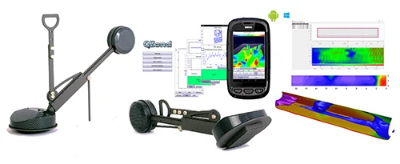
Описание
Многоцелевой компактный профайлер “Геовизер” реализует метод индукционного многочастотного картирования, и позволяет решать задачу быстрого и бесконтактного исследования земли. В результате исследований можно получать пространственное распределение уровня вторичного сигнала от среды на глубину до 3-х метров. Уровень сигнала позволяет проводить оценки УЭС. Особенно успешно выделяются локальные высоко контрастные изменения в среде (металлические объекты, полости, обводнения высокоминерализованным раствором). Также хорошей мишенью являются более проводящие объекты (тоннели, бункеры с увлажненными стенами, трубы и т.д.) в менее проводящем грунте.
Трехчастотный профайлер “Геовизер” позволяет вести профилирование на любом наборе из 3 фиксированных частот в диапазоне 12.5 – 111 кГц, в том числе с автоматической привязкой точки измерения к глобальным координатам. Габаритные размеры прибора (750 x 650 x 340 мм), вес (4,5 кг) и простота в управлении посредством смартфона на базе операционной системы Андроид – все это существенно облегчает процесс сбора данных, а также увеличивает пространственное разрешение исследования.
Предварительные результаты измерений “Геовизер” визуализируются в реальном времени на экране смартфона. Специализированное ПО на смартфоне позволяет строить квази-трехмерные представления распределения сигнала.
Соединение с прибором осуществляется по BlueTooth протоколу.
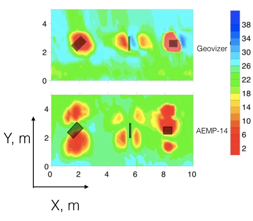
Основные особенности:
– Малый вес и габаритные размеры;
– Возможность проведения пользовательской калибровки;
– Расширенные возможности программного обеспечения QZond/iiSystem: расчет каж.УЭС, фазы сигнала.
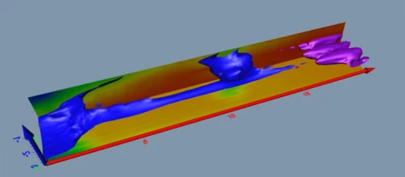
Агрономия
Оценка концентрации минеральных удобрений
Контроль качества и эффективности проведения различных работ
Оценка земель сельскохозяйственного назначения
Оценка фертильности почвы
Сезонный мониторинг динамики изменения св-в почвы
Исследования состояния грунта, определения зон трещиноватости, обводнения
Коммунальное хозяйство
Мониторинг состояния поддорожного пространства
Мониторинг состояний подземных коммуникаций
Поиск и локализации источников утечки воды в подземных трубопроводах
Определения местоположения подземных коммуникаций, сооружений и пр.
Инженерная геология
инженерно-геологические изыскания
инженерно-гидрологические изыскания
инженерно-экологические изыскания
Археология
Локализация археологических объектов
Мониторинг состояния скрытых под грунтом памятников архитектуры
Детальное исследование археологических объектов
Экология
Агроэкология
Анализ влияния техногенных факторов
Экологический надзор
Мониторинг потенциально опасных объектов
Управление экологическими рисками
Экологическая оценка загрязнения почвы горюче-смазочными материалами
Обнаружение и локализация захоронений промышленных отбросов любого химического состава
Мелиорация
Контроль эффективности проведения работ
Мониторинг динамики распространения грунтовых вод
Безопасность
Поиск криминальных схронов, подкопов, тоннелей
Обнаружение врезок в магистральные трубопроводы
Поиск источника утечки и оценка объема утечки из магистральных трубопроводов нефтепродуктов
Технические характеристики
|
Общие параметры – Частотный диапазон: 12,5-111 кГц (3 частоты); – Время измерения: 0,3-0,9 с (в зависимости от количества выбранных частот); – Мощность генератора: 60 Вт; – Чувствительность приемника: 1 мВ; – Габариты в собранном состоянии: 90х75х25 см – Время работы батареи: 12 часов; – Вес прибора: 5 кг. – ПО (Android, Windows). |
Комплектация и цены
Загрузки
Техническая документация “Геовизер” |
|
ПO для сбора и визуализации данных – QZond 4.04 (Android) |
|
ПО для первичной обработки и экспорта данных – iiSystem 4.04 (Windows PC) |
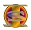 |
QZond – разработана для Android совместимых устройств (смартфоны, планшеты, смартфоны и пр.) и предназначена для сбора данных с использованием аппаратуры Геовизер, обеспечивает первичную визуализацию данных в виде карт, разрезов и кривых распределения сигнала, имеет простой и удобный интерфейс, позволяет использовать встроенные и внешнике приемники GNSS, включая RTK GNSS.
iiSystem – предназначена для визуализации, а также первичной обработки, подготовки и экспорта данных для последующего анализа в дргом ПО (Surfer, Voxler, Paraview, др.)
Применение
– инженерная геология;
– строительство;
– агрономия;
– экология;
– археология;
– коммунальное хозяйство;
– мелиорация;
– гидрогеология;
– специальные задачи.
Галерея
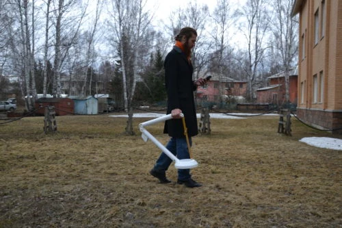
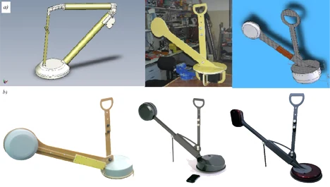
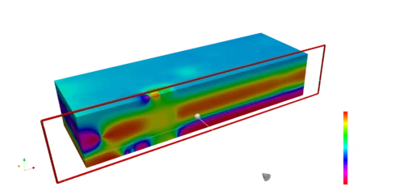
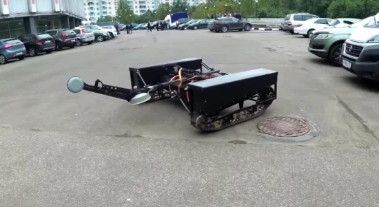
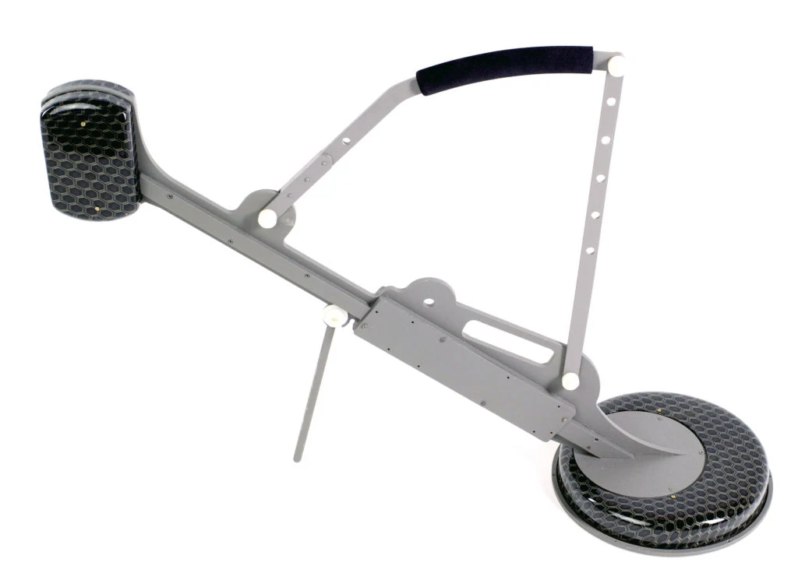
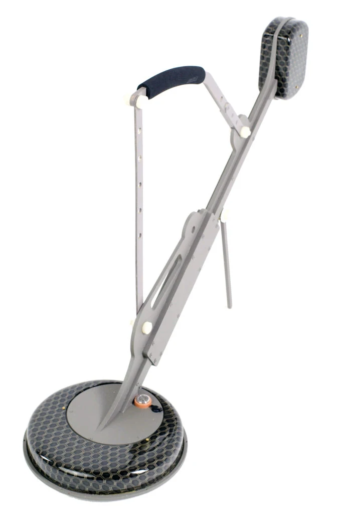
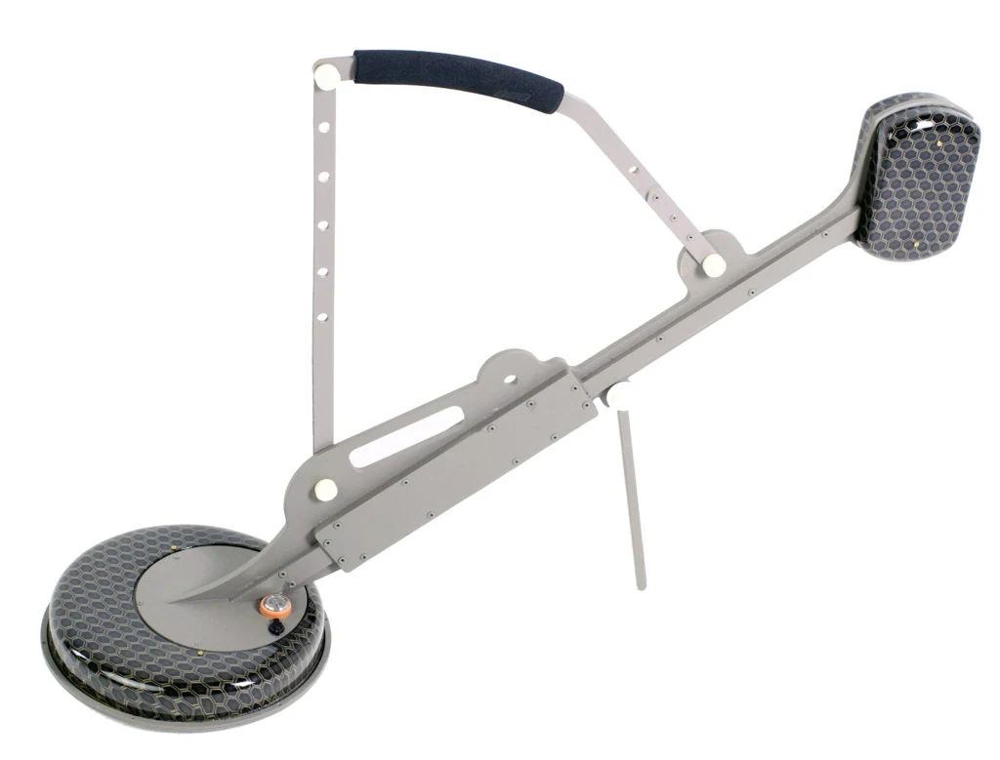
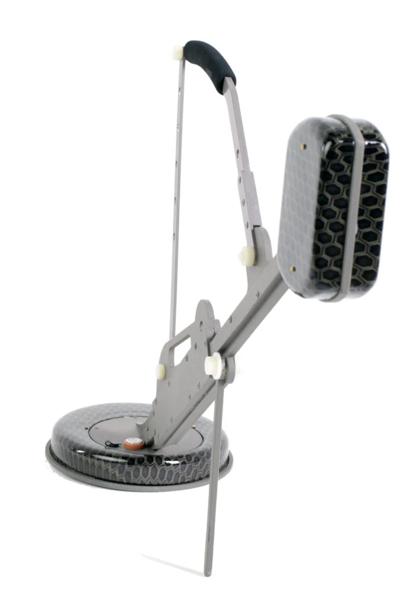
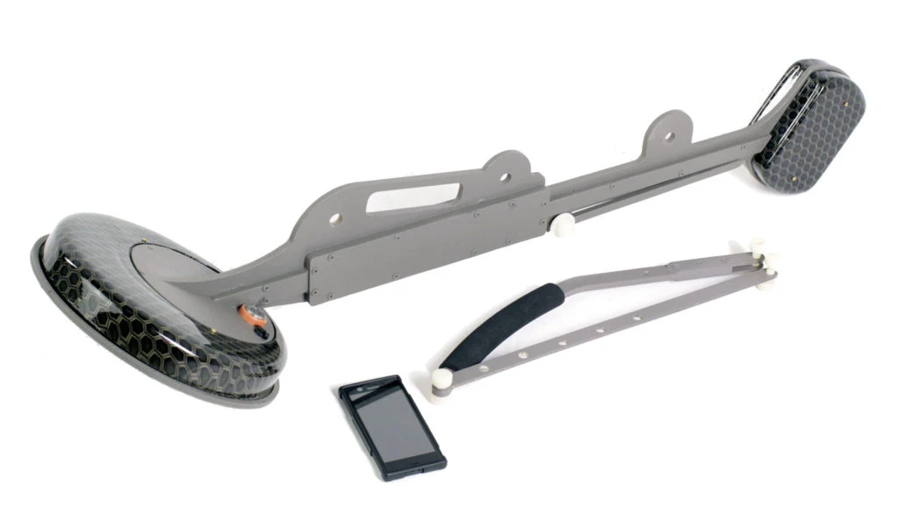
Оборудование, комплектация и консультации: связаться с КБ Электрометрии.